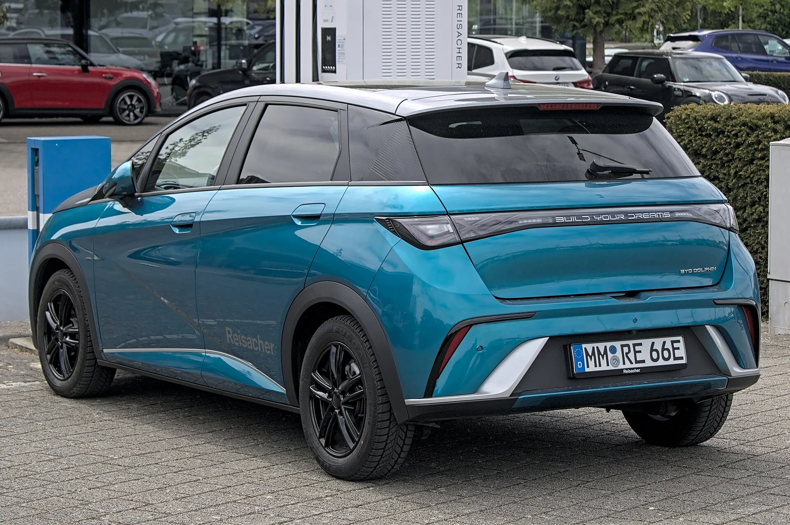

▲ BYD 씰. 국고 보조금이 끊겼지만 회사가 같은 금액을 자체 지원하고 있다
BYD는 7월 1일부터 국고 보조금을 받지 못합니다. 전기차 보급사업 수행자 선정 평가에서 탈락했기 때문인데, 제도의 구조와 배점은 앞서 별도로 정리한 바 있습니다.
이 글에서 다룰 것은 제도가 아니라 지금 계약하면 얼마를 내느냐입니다. 결론부터 말하면 겉으로 보이는 가격은 거의 변하지 않았습니다. 다만 숫자를 하나씩 맞춰보면 메워지지 않은 구멍이 보입니다.
1. 회사가 대신 낸다 — 금액이 정확히 일치한다
BYD코리아는 7월 1일부터 '친환경 무공해 차량 고객 지원 프로그램'을 가동했습니다. 사라진 국고 보조금과 동일한 금액을 회사가 직접 부담하는 방식입니다.
| 모델 | 기존 국고 보조금 | 자체 지원금 | 차액 |
|---|---|---|---|
| 돌핀 | 109만 원 | 109만 원 | 0 |
| 씰 (후륜구동) | 169만 원 | 169만 원 | 0 |
| 씰 (사륜구동) | 151만 원 | 151만 원 | 0 |
| 씨라이언 7 | 152만 원 | 152만 원 | 0 |
| 아토 3 | 126만 원 | 126만 원 | 0 |
좌우 숫자가 정확히 같습니다. 국고 보조금 항목만 놓고 보면 소비자가 손해 보는 금액은 0원입니다.
여기서 많은 사람이 놀라는 지점이 하나 더 있습니다. BYD가 받던 국고 보조금이 원래 크지 않았다는 사실입니다. 국고 보조금은 정액이 아니라 1회 충전 주행거리, 전비, 배터리 성능 등을 반영한 산식으로 정해지는데, BYD 모델들은 이 산식에서 높은 점수를 받지 못했습니다. 돌핀은 109만 원, 가장 많은 씰 후륜구동도 169만 원입니다.
"보조금이 끊기면 수백만 원 오른다"는 예상이 빗나간 이유가 여기 있습니다. 애초에 받던 금액이 100만 원대였기에, 회사가 메우는 부담도 그만큼 감당 가능한 수준이었습니다.

▲ BYD 돌핀. 기존 국고 보조금은 109만 원이었다
2. 메워지지 않은 구멍 — 지자체 보조금
문제는 국고 보조금이 전부가 아니라는 점입니다. 전기차를 살 때 받는 보조금은 국고 + 지자체 두 갈래입니다. 그리고 지자체 보조금은 국고 보조금 지급을 전제로 지급되는 구조입니다.
여기서 계산이 하나 나옵니다. 돌핀의 국고 보조금은 109만 원입니다. 그런데 이번 조치로 서울시 기준 상실액은 141만 원으로 전해집니다. 두 숫자의 차이인 약 32만 원이 지자체 몫이라는 뜻입니다.
그런데 BYD가 자체 지원하는 금액은 국고분과 같은 109만 원입니다. 단순 계산으로는 지자체분 32만 원이 메워지지 않고 남습니다. 씰도 마찬가지입니다. 국고 169만 원에 서울 기준 상실액 219만 원이면 약 50만 원 차이가 납니다.
| 모델 | 서울 기준 상실액 | 자체 지원금 | 남는 공백(추정) |
|---|---|---|---|
| 돌핀 | 141만 원 | 109만 원 | 약 32만 원 |
| 씰 | 219만 원 | 169만 원 | 약 50만 원 |
중요한 것은 서울이 지자체 보조금이 적은 편에 속한다는 점입니다. 지자체 보조금은 지역별 편차가 커서, 지방으로 갈수록 액수가 커지는 경우가 많습니다. 즉 서울 밖에서는 이 공백이 더 벌어질 수 있습니다.
다만 이는 공개된 수치를 바탕으로 한 추정입니다. BYD가 지역별로 추가 지원을 하는지, 딜러 차원의 할인이 붙는지는 확인되지 않았습니다. 거주 지역 기준으로 최종 견적서를 직접 받아 확인하는 것이 유일하게 정확한 방법입니다.

▲ BYD 씨라이언 6. 자체 지원 프로그램은 8월에도 연장 운영 중이다
3. 8월에도 연장됐다 — 그런데 월 단위다
이 프로그램은 처음 발표될 때 7월 한 달 운영으로 안내됐습니다. 임시 조치라는 뜻으로 읽혔고, 8월부터 값이 오를 것이라는 전망도 나왔습니다.
결과적으로 8월에도 연장됐습니다. 지금 계약하는 사람은 7월과 같은 조건을 적용받습니다.
다만 구조를 정확히 이해할 필요가 있습니다. 이 지원은 법이나 제도가 아니라 회사가 월 단위로 결정하는 판촉입니다. 정부 보조금은 예산이 소진되지 않는 한 기준이 유지되지만, 회사 판촉은 언제든 축소되거나 종료될 수 있습니다. 9월 이후까지 이어진다는 보장은 없습니다.
계약과 출고 사이에 시차가 있다면 이 점이 중요해집니다. 지원금 적용 기준이 계약 시점인지 출고 시점인지를 계약서에서 반드시 확인해야 합니다. 출고 기준이라면, 출고가 다음 달로 넘어갔을 때 조건이 달라질 수 있습니다.

▲ 보조금을 못 받는 상태가 이어지면 중고 시세에도 영향이 갈 수 있다
4. 잘 안 따지는 변수 — 중고 잔존가치
신차 가격만 보면 지금 사는 것과 6월에 사는 것에 큰 차이가 없습니다. 그런데 몇 년 뒤를 생각하면 변수가 하나 더 있습니다.
중고 전기차 시세는 그 차를 새로 살 때의 실구매가에 강하게 묶입니다. 신차 보조금이 줄면 신차 실구매가가 오르고, 그러면 중고 시세도 따라 오르는 것이 일반적입니다. 반대로 신차 값이 그대로면 중고 시세도 그대로입니다.
지금 BYD는 회사가 지원금을 내서 신차 실구매가를 유지하고 있습니다. 이 상태에서는 중고 시세에 즉각적인 영향이 없습니다. 다만 지원 프로그램이 종료되고 보조금도 계속 못 받는 상황이 이어진다면 이야기가 달라집니다. 신차 값이 오르면 기존 차량의 중고 시세도 함께 올라가는 방향이 되지만, 반대로 브랜드가 보조금 대상에서 빠져 있다는 사실 자체가 수요를 위축시켜 시세를 누르는 요인으로도 작용할 수 있습니다.
BYD는 내년 상반기 재평가에서 다시 도전할 수 있습니다. 통과 여부가 잔존가치에 영향을 줄 변수라는 점은 염두에 둘 만합니다. 다만 국내 판매 이력이 짧아 중고 시세 데이터 자체가 아직 충분히 쌓이지 않았다는 점도 함께 감안해야 합니다.
5. 계약 전 확인할 네 가지
① 거주 지역 기준 최종 견적 — 지자체 보조금이 얼마인지, 그중 얼마가 실제로 적용되는지를 견적서 숫자로 확인해야 합니다. 표에 적힌 금액이 아니라 내 지역 기준입니다.
② 지원금 적용 기준 시점 — 계약 시점인지 출고 시점인지. 출고가 다음 달로 넘어갈 가능성이 있다면 특히 중요합니다.
③ 프로그램 종료 시 처리 — 계약 후 프로그램이 종료되면 조건이 유지되는지 계약서에 명시돼 있는지 확인해야 합니다.
④ 서비스망과 부품 수급 — 국내 진출 기간이 짧은 브랜드는 서비스센터 접근성과 부품 조달 기간을 미리 확인해두는 편이 안전합니다.
6. 정리 — 지금은 괜찮고, 그다음이 변수다
정리하면 지금 시점에서 BYD의 실구매가는 보조금을 받던 때와 크게 다르지 않습니다. 회사가 국고분을 그대로 메우고 있고, 8월에도 연장됐습니다. 국고 보조금 자체가 100만 원대였던 덕분에 회사가 감당할 수 있는 규모였습니다.
남은 것은 두 가지입니다. 지자체 보조금만큼의 공백이 지역에 따라 존재할 수 있다는 점, 그리고 이 지원이 월 단위 판촉이라 언제든 바뀔 수 있다는 점입니다. 둘 다 표에 적힌 숫자가 아니라 내 견적서에서 확인해야 하는 항목입니다.
가격 경쟁력을 앞세워 국내에 자리 잡은 브랜드가 보조금 없이도 그 가격을 유지할 수 있는지는 결국 시간이 답합니다. 국산차 가격 경쟁력이 흔들리는 흐름 속에서 BYD가 차지한 위치는 앞서 정리한 바 있습니다.